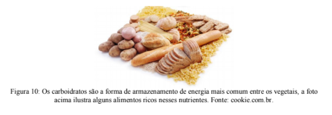
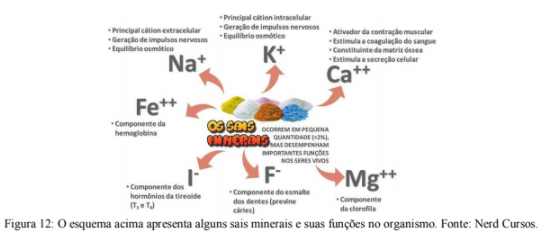
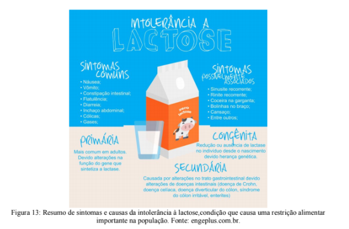
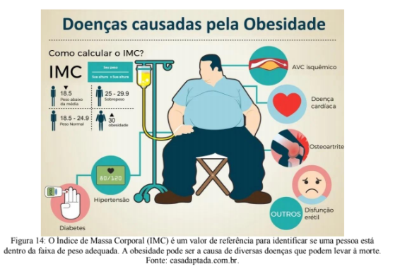
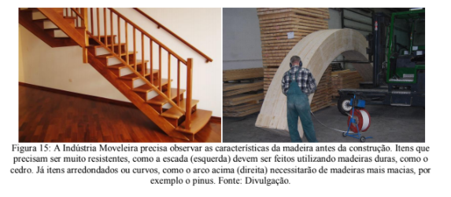

Capítulo 2
A NATUREZA NÃO É APENAS UM RECURSO: OS VEGETAIS E A INDÚSTRIA MOVELEIRA
Qual questão está envolvida nisso?Quando você olha uma floresta enxerga apenas um fonte de madeira? Ou percebe que antes de qualquer uso lá existem diversos seres vivos que merecem tanto valor quanto eu, você e todos os outros seres vivos?
As plantas são seres que se movimentam pouquíssimo, a ponto de não percebermos isso, mas assim como qualquer outro elemento vivo elas se comunicam, se reproduzem, reagem a ferimentos, se esforçam para se alimentar.
Acesse o vídeo clicando no link a seguir:
Algumas plantas são classificadas vegetais lenhosos, pois produzem uma estrutura a base de celulose muito resistente para suportar o próprio peso, o tronco e galhos das árvores. A humanidade desenvolveu uma série de tecnologias que utilizam essa parte lenhosa dos vegetais, que passamos a chamar de madeira. Em praticamente todos os casos, utilizar a madeira implica abater a planta.
A madeira é amplamente utilizada em construções, produção de móveis, fonte de energia. Como discutimos no primeiro capítulo, para garantir a qualidade de vida é necessário promover um desenvolvimento sustentável. Isso significa estabelecer objetivos de médio e longo prazo, o que para muitos não é importante.
O combate ao desmatamento ilegal deu origem a diversas leis que protegem nosso patrimônio florestal e regulam o seu uso para fins comerciais. Infelizmente, é frequente que criminosos pratiquem o desmatamento ilegal (figura 7).
Os vegetais exibem grande diversidade de formas e funções ecológicas e características únicas que devem ser consideradas ao pensar práticas sustentáveis associadas ao seu uso.
ContextualizandoTodo o conhecimento que nós possuímos sobre os seres vivos está organizado pelo conhecimento científico. Isso nos ajuda a entender melhor como as interações acontecem e como devemos protegê-las.
Ao analisarmos a diversidade dos seres vivos, é fácil perceber que alguns são mais parecidos entre si, ou seja, compartilham mais características em comum quanto mais aparentados são.
PARA ENTENDER MAIS...
Organizar e classificar faz parte do nosso cotidiano. Estamos acostumados a pensar por categorias.
Acesse o vídeo clicando no link a seguir:
Os seres vivos são classificados de acordo com um sistema próprio de nomenclatura. Ele foi proposto no século XVII e estabelece regras claras para criar o nome científico de uma espécie. Além de estabelecer níveis diferentes de organização. Veja abaixo (figura 8) quais níveis são esses e um exemplo de como são aplicados.

No exemplo apresentado na figura 8, tanto o urso-negro quanto o sapo fazem parte do Filo Chordata, mas apenas os ursos negro, polar e pardo fazem parte do Gênero Ursus
Conhecer as relações de parentesco nos permite prever como as espécies vão se comportar. Por exemplo, sabemos que um coqueiro não sobrevive se tiver o caule cortado, logo, existe uma grande probabilidade que um palmiteiro (que também pertence à Família Arecaeae) também não sobreviva. E isso, de fato, acontece.
É essencial conhecer a diversidade para que possamos praticar o desenvolvimento sustentável.
(RE)CONSTRUINDO CONHECIMENTOSOs vegetais estão agrupados no Reino Plantae, pois são organismos eucariontes pluricelulares autótrofos. Comumente conhecidos como vegetais ou plantas somam milhares de espécies distribuídas em praticamente todos os ambientes do planeta. Existem plantas terrestres, marinhas e de água doce. As terrestres vivem fixas no substrato, enquanto que as de ambientes aquáticos podem flutuar ou viver submersas na coluna d'água, estando ou não aderidas a um substrato. Ao longo do processo evolutivo surgiram variações nas formas de vida dos vegetais e atualmente existem, inclusive, espécies que não são exclusivamente autótrofas, como você pode ver no vídeo abaixo:
Acesse o vídeo clicando no link a seguir:
As células das plantas apresentam-se revestidas por parede celular que é um reforço de celulose que cobre todo o exterior da célula. Sua função é aumentar a resistência mecânica da célula, o que garante um formato constante. Mesmo envolvendo toda a membrana plasmática, a parede celular é permeável à água e outros elementos e permite a comunicação da célula com o meio exterior.
Você já pensou sobre isso também?Você certamente já reparou que, na maioria dos casos, as folhas dos vegetais possuem a mesma cor, mas você já se perguntou por que as plantas são verdes?
Como vimos acima, as plantas são organismos autótrofos, isso significa que são capazes de produzir compostos orgânicos para suprir sua necessidade de energia, ou seja, produzem o próprio alimento sem depender de outros seres vivos. O nome dado a esse processo de produção de biomassa é fotossíntese.
Acesse o vídeo clicando no link a seguir:
Na fotossíntese a energia da luz do Sol é transferida para o carbono do gás carbônico (CO2) absorvido do ambiente. Essa energia da luz é utilizada para ligar um carbono no outro formando moléculas mais complexas, os açúcares.
Tudo isso acontece em uma estrutura da célula vegetal chamada cloroplasto. O cloroplasto é preenchido com moléculas de clorofila, que são verdes (figura 9).
Durante grande parte da história evolutiva dos seres vivos, aproximadamente 3,2 bilhões de anos, as formas de vida existentes ocuparam apenas o ambiente marinho. Somente há cerca de 400 milhões atrás é que as primeiras plantas iniciaram a colonização do ambiente terrestre. As informações coletada indicam que as plantas tem um ancestral em comum com as algas verdes, com quem compartilham uma série de características em comum (como parede celular celulósica, clorofilas do tipo a e b, amido como material de reserva, divisão celular característica). A transição entre o ambiente aquático e terrestre demandou uma série de adaptações, o principal fator limitante era a manutenção da hidratação, já que a água não estava mais disponível o tempo todo e o ressecamento era inevitável. Dentre estas adaptações destacam-se (figura 10):
- a cutícula, uma camada de revestimento sobre as folhas e o caule formada por uma substância cerosa impermeabilizante (cutina) que impede a excessiva perda de água.
- os estômatos, poros situadas principalmente nas folhas cuja abertura é controlada pela planta, regulando a entrada e saída de gases e a perda de vapor d’água;
- o sistema vascular, constituído por células justapostas formando vasos de condução, permitiu que a água atingisse de modo eficiente todas as células do vegetal, garantindo maior independência da água. Algumas plantas, como é o caso das briófitas (musgos), não apresentam sistema vascular de modo que, embora tenham colonizado o ambiente terrestre, estão restritas a locais com grande oferta de água.
- a semente, uma estrutura especializada de proteção do embrião, que garante nutrientes e impede a perda de água até o momento da germinação. Esta estrutura, presente somente nas gimnospermas (pinheiros) e nas angiospermas (plantas com flores), juntamente com as demais garantiu um grau de independência da água capaz de efetivar a conquista dos continentes pelas plantas.
Ao se estabelecerem em ambientes terrestres as plantas causaram uma série de mudanças ambientais que foram aproveitadas por outros organismos como os fungos, os insetos e vertebrados terrestres, entre outros.
Mesmo nos ambientes terrestres há variação na disponibilidade de água e, consequentemente, variação nas formas de vida encontradas em cada um. As plantas são tradicionalmente divididas em quatro grupos:
As briófitas são conhecidas popularmente como musgos e ocupam ambientes muito úmidos. O corpo não possui sistema vascular e por isso não ultrapassam 20 cm de comprimento, sem sistema vascular não é possível carregar água e nutrientes ao longo de um corpo grande. O seu corpo pode ser dividido em três partes: rizóides, caulóides e filóides. São muito dependentes ainda da água para a fecundação, já que seu gameta masculino ou anterozóide é flagelado e, com isso, necessita nadar até o gameta feminino ou oosfera que se encontra no interior de um órgão chamado de arquegônio, para que haja a fecundação propriamente dita.
As pteridófitas (samambais, avencas e xaxins) possuem sistema vascular, o que possibilita que tenham corpos maiores. São, sobretudo, terrestres, vivendo preferencialmente em locais úmidos e sombreados (a mata Atlântica representa o hábitat da maioria das espécies). Existem algumas espécies que vivem em água doce, como é o caso dos gêneros Salvinia e Azolla. Não existem espécies marinhas. Assim como as briófitas, dependem da água para a fecundação. A planta adulta tem o corpo formado por caule, raízes e folhas geralmente compostas.
As gimnospermas são plantas como os pinheiros, as sequóias e os ciprestes. São terrestres, comumente encontradas em locais frios ou temperados. Possuem órgãos sexuais desenvolvidos chamados de estórbilos, nós os conhecemos como pinhas. Algumas gimnospermas ainda dependem da água para a fecundação, porém, a maioria delas utiliza o vento para a dispersão do pólen, levando-as à independência da água para a fecundação, ou seja, a conquista definitiva do ambiente terrestre. Com um sistema vascular bastante desenvolvido, algumas gimnospermas (como as sequoias gigantes) atingem mais de 50 metros de altura. O corpo vegetativo é dotado de raízes, caules, folhas e sementes. As sementes, por sua vez, apresentam-se nuas, ou seja, não ficam protegidas no interior de frutos.
As angiospermas constituem um grupo extremamente diversificado; plantas herbáceas, de caule delicado, outras arbóreas com acentuado crescimento em espessura; dominam a flora terrestre atual, ocupando desde regiões desérticas até excessivamente úmidas, havendo representantes aquáticas. Possuem o corpo organizado em raiz (fixação e absorção), caule (sustentação e condução) e folhas (fotossíntese e nutrição). As estruturas reprodutivas agrupadas em flores que dão origem a sementes abrigadas no interior de frutos resultantes do desenvolvimento do ovário após a fecundação. São independentes da água para fecundação.
VOCÊ SABIA?
Com o passar do tempo essa expressão se popularizou para designar madeiras de boa qualidade para uso humano (figura 11).

AÇÃO E REFLEXÃO
Como se faz o papel?As folhas de papel que usamos para escrever são produzidas a partir da celulose retirada da parede celular das células vegetais. Da madeira à folha de papel, o processo de fabricação é longo e envolve o uso de diversos recursos naturais. Analise a imagem abaixo (figura 12).
Pense um pouco no que já discutimos aqui e identifique possíveis impactos da produção de papel sobre o meio ambiente. Quais práticas sustentáveis podem ser aliadas a esse processo para garantir um desenvolvimento sustentável?
O QUE APRENDI